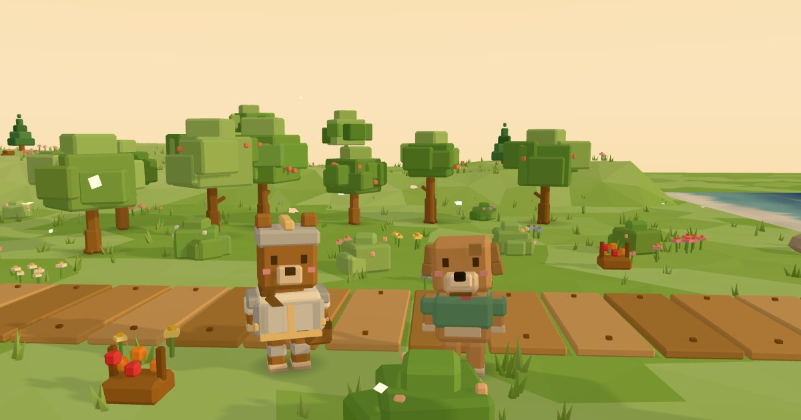

Chapter XVI
Beulah Land
In a golden land in sight of the City, the pilgrims come to the deep River. Christian is afraid and begins to sink, but Hopeful holds him up, and together they reach the other side.

The big idea
Even in death, God does not let go of his people. Our safety doesn’t depend on how brave we feel.
From the Bible
“When you pass through the waters, I will be with you; and through the rivers, they shall not overwhelm you.”Isaiah 43:2 (ESV)
“I am the resurrection and the life. Whoever believes in me, though he die, yet shall he live.”John 11:25 (ESV)
What it means
- Beulah Land
- Peace near the end of the journey.
- The River
- Death, which every pilgrim must cross.
- Christian’s fear
- Strong faith can still have frightened moments. God held him.
- Hopeful
- A friend who reminds us of the truth when we can’t feel it.
Questions for ages 4–7
- Was Christian scared in the river?
- Who helped him?
- Who met them on the other side?
Questions for ages 8–12
- Why might someone who trusts God still feel afraid?
- What would you say to a frightened friend?
- Do you have questions about death? (It is all right not to have every answer.)
Do it together
If someone you love has died, look at a photo or tell a story about them together. Take as much time as you need.
Pray
Dear Jesus, thank you that you have gone through death and come out alive. Hold us when we are afraid. Amen.
Scripture quotations are from the ESV® Bible (The Holy Bible, English Standard Version®), © 2001 by Crossway, a publishing ministry of Good News Publishers. Used by permission. All rights reserved.